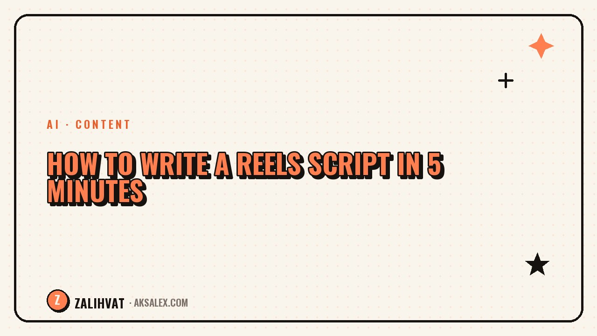

How to Write a Reels Script in 5 Minutes

Spending ages agonizing over a script is a common reason why creators keep putting off filming. In reality, the structure of a 30-60 second video fits into four blocks, and AI can help you quickly sketch out a draft for each one. All that's left after that is to adapt the text to your own voice and shoot.
A structure that actually works
A 30-60 second Reel usually follows the same logic: hook, promise of value, main content, call to action or takeaway. If you keep this structure in mind, writing a script becomes fast, because you don't need to reinvent the format every time - only the content changes.
- Hook - the first 2-3 seconds, grabs attention
- Promise - what the viewer gets if they keep watching
- Main part - 2-4 specific points or steps
- Ending - a takeaway, a question to the audience, or a soft call to action
How to use AI at each stage
Minute 1: topic and hook
Describe the topic to the AI in one sentence and ask for 5 hook options. Pick the one that sounds natural when said out loud.
Minutes 2-3: main part
Ask it to break the topic down into 3-4 specific points with short phrasing - no long paragraphs, because the viewer absorbs the video by ear and on the go.
Minute 4: ending
The ending should logically wrap up the thought, not just cut off. Ask the AI to suggest a question for the audience - this boosts the number of comments.
Minute 5: making it your own
Read the whole text out loud and replace phrases that don't sound like your usual speech. This is the most important step - skip it and the video will sound foreign to who you are.
Table: block timing
| Block | Duration | Purpose |
|---|---|---|
| Hook | 2-3 seconds | Stop the scroll |
| Promise | 3-5 seconds | Explain why to keep watching |
| Main part | 20-40 seconds | Deliver concrete value |
| Ending | 3-5 seconds | Close the thought and drive comments |
Example prompt for AI
The more specific the prompt, the less editing time you'll need afterward. Specify the topic, the video's length, the target audience, and the tone - conversational, expert, or ironic.
A good AI prompt doesn't save time on generation - it saves time on redoing the result. Those are two very different things.
If the first draft doesn't work, don't rewrite it by hand from scratch - ask the AI to rephrase a specific block, explaining exactly what didn't fit.
Common mistakes in quick scripts
The biggest mistake is skipping the "make it your own" step out of haste. A script straight from AI with no edits sounds smooth but impersonal, and the audience picks up on that in your intonation when you're reading off the screen.
- A main part that's too long, with no pauses to breathe
- A hook unrelated to the video's actual content
- An ending that cuts off without a logical conclusion
- Text that hasn't been adapted to your own way of speaking
Frequently Asked Questions
Is it really possible to write a script in 5 minutes if it used to take an hour?
Yes, if you use AI at the draft stage and don't waste time inventing a structure from scratch every time.
Do you need to rewrite the entire AI-generated text in your own words?
Not all of it, but you must read it out loud and replace phrases that don't sound like your usual speech - this is critical for audience trust.
How many points should be in the main part of a 30-60 second video?
Usually 3-4 specific points, so the viewer has time to absorb the information by ear without being overloaded.
What should I do if the AI's hook doesn't grab attention?
Ask it to generate 5 more options, specifying what type of hook you need - a question, a number, or a conflict - and pick the one that sounds most natural.
Can this framework be used for videos longer than a minute?
Yes, the structure scales - you just add more points to the main part while keeping the hook-promise-value-ending logic.
not by hand